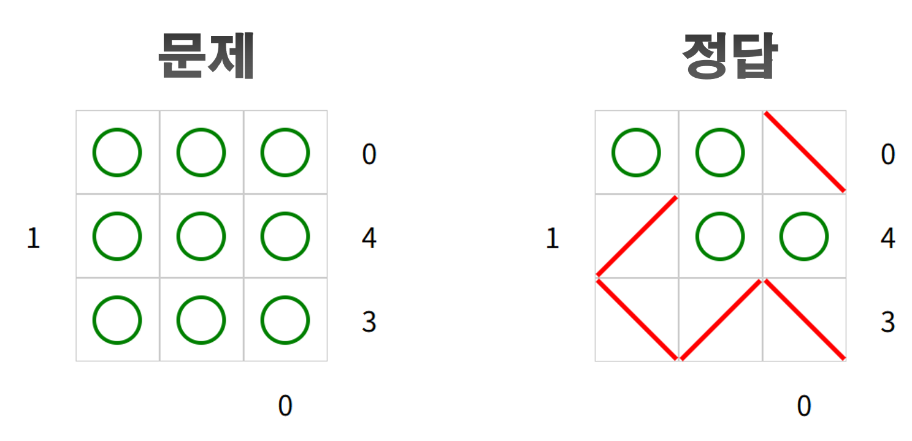
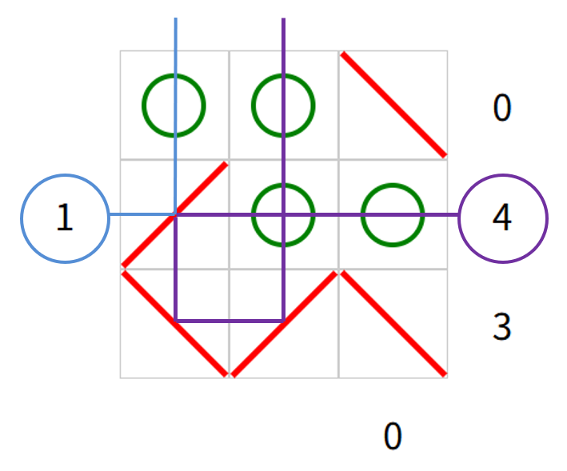

녹색 원을 클릭하면 빨간색 거울(대각선)이 순서대로 나타납니다. 더 클릭하면 다시 녹색 원이 됩니다.
숫자는 해당 위치에서 수평 또는 수직으로 볼 때 보이는 녹색원의 수를 나타냅니다.(단, 빨간색 거울을 통해 반사되는 것도 포함됩니다.)
숫자 1과 숫자 4에 대한 것은 아래 그림을 참고하세요. 숫자 4를 따라가보면 녹색 원이 두 번 셀 수도 있습니다.

닫기